同NDK技术的渊源始于3年前，使用so文件的时候了解到NDK技术，并且C语言一直是强项，就鼓捣起NDK开发。在AndroidStduio还没推广的年代，基于eclipse搭建NDK开发环境需要安全依赖开发工具，并且调试起来具备难度。随后AndroidStudio也先后支持nkd-build和cmake使用NDK开发。
参见之前的博客：
[eclipse下使用NDK开发so库](/blog/2016-03-23)
[AndroidStudio配置NDK开发环境](/blog/2016-04-09)
1 准备工作
1.1 下载 NDK
当前 NDK 稳定版已经 发布到 r15c 。附上各个平台的下载地址：
android-ndk-r15c-windows-x86
android-ndk-r15c-windows-x86_64
android-ndk-r15c-darwin-x86_64
android-ndk-r15c-linux-x86_64
1.2 添加NDK依赖
解压下载好的文件在本地，在 AndroidStudio 工程配置（注意不是 AndroidStudio 工具配置）中指定 NDK 路径。
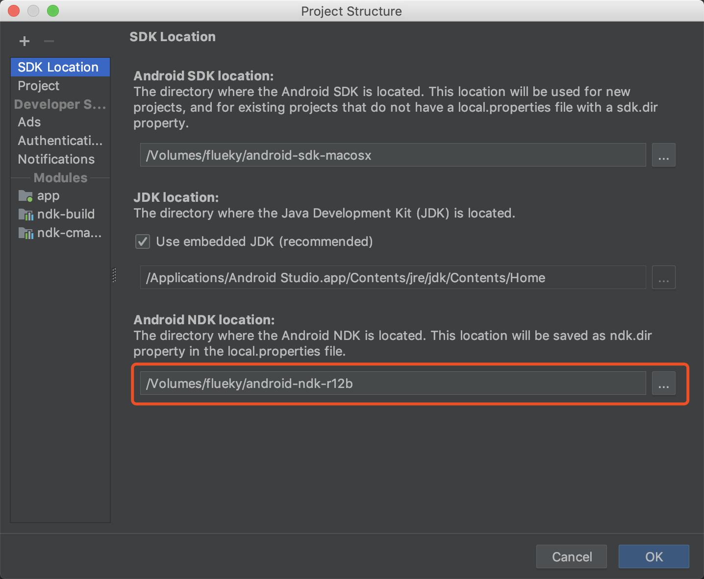
或者在local.properties文件中指定NDK路径。
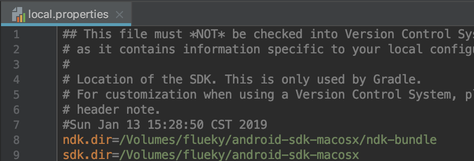
1.3 添加cmake支持
在 AndroidStudio 工具配置中，选择 Android SDK -> SDK Tools 中，勾选CMake并安装。
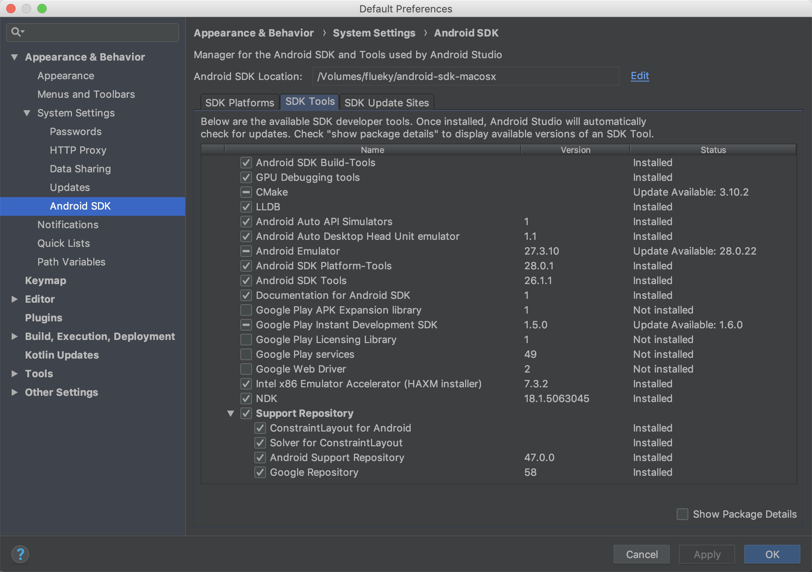
2 新建支持NDk工程
现在的AndroidStduio更支持一种极简方式集成NDK开发支持，即在下图中勾选include C++ support。然后选择C++标准。如C++ 11。建选默认的ToolChain Default。
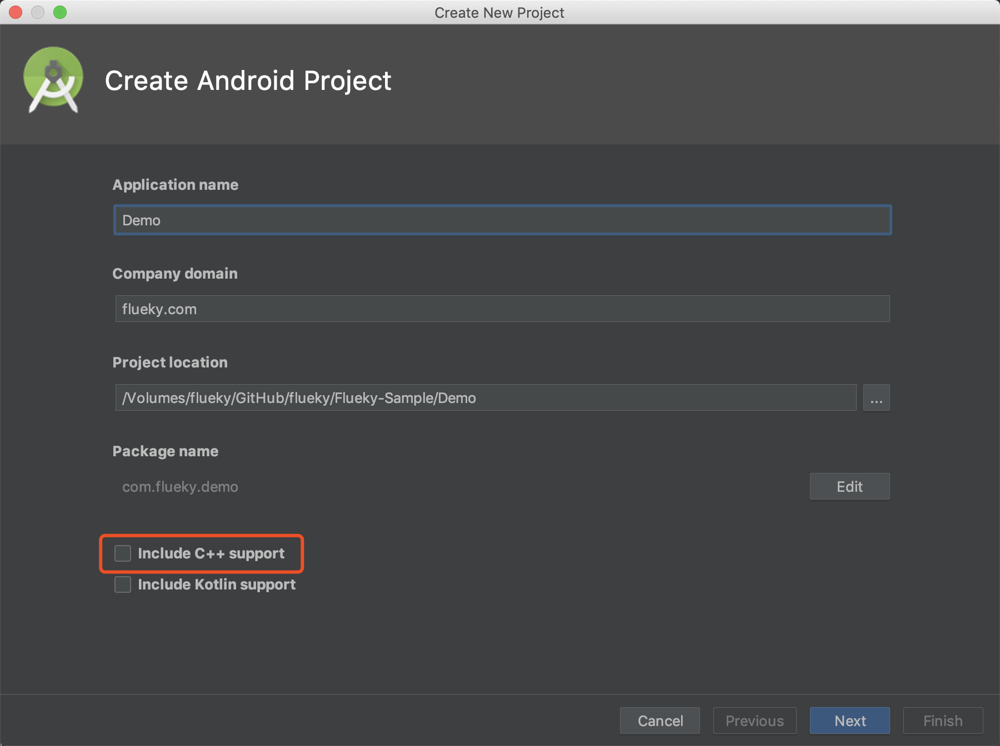
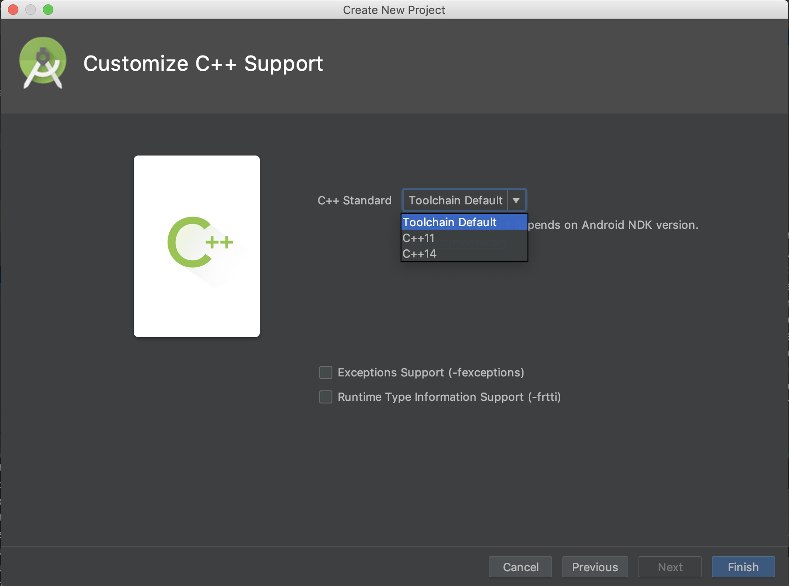
之后正常 run 即可将 C 语言部分生成出 so 文件并打包到 apk 文件中。
3 给工程添加NDK支持
上述方式适合在新的工程中添加 NDK 支持。如何要在现有的项目中添加 NDK 支持，现提供 cmake 和 ndk-build 两种方式。
由于在同一个工程中，同时支持 cmake 和 ndk-build 两种方式编译 so 文件，因此将 C 源码单独放在 cpp-src 目录。且将 cmake、ndk-build 区分不同的module进行编译。
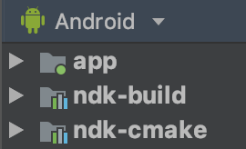
3.1 cmake
这是目前最受欢迎的集成方式，AndroidStduio 在创建新工程时默认使用该方式添加 NDK 支持。但在现有的工程中添加 NDK支持，需要手动配置。
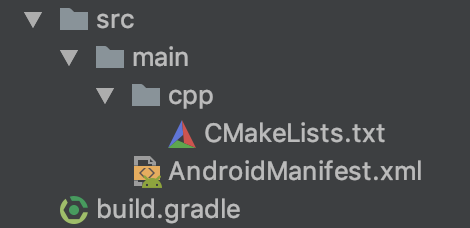
创建 cmake module 添加个三个文件。
- CMakeLists.txt cmake编译配置文件
1
2
3
4
5
6
7
8
9
10
11
12
13
14
15
16
17
18
| cmake_minimum_required(VERSION 3.4.1)
add_library(
hello-jni # so 库的名称 libhello-jni.so
SHARED # 设置为分享库
# 指定C源文件的路径，指向公共cpp-src目录
../../../../cpp-src/hello-jni.c
)
find_library(
log-lib # 设置路径变量名称
log # 指定CMake需要加载的NDK库
)
# 链接hello-jni库依赖的库，注意下面变量名的配置
target_link_libraries(hello-jni
${log-lib}
)
|
- AndroidManifest.xml 每个module必须的配置文件，指定packageName。
1
2
3
4
| <?xml version="1.0" encoding="UTF-8" ?>
<manifest package="com.flueky.cmake">
</manifest>
|
- Build.gradle 每个module必须的配置文件，用于构建项目。
1
2
3
4
5
6
7
8
9
10
11
12
13
14
15
16
17
18
19
20
21
22
23
| apply plugin: 'com.android.library'
android {
compileSdkVersion 28
defaultConfig{
externalNativeBuild {
cmake {
arguments "-DCMAKE_BUILD_TYPE=DEBUG"
}
}
}
externalNativeBuild {
cmake {
path "src/main/cpp/CMakeLists.txt"
}
}
}
|
关于 CMake 编译参数的设置，更多内容请阅读官方资料。
眼尖的小伙伴已经发现两处配置了 externalNativeBuild。其中第二处的externalNativeBuild配置是生成Gradle Task 可以不运行工程，直接在 ndk-cmake -> Tasks -> other 找到编译 so 文件有关的四个任务。
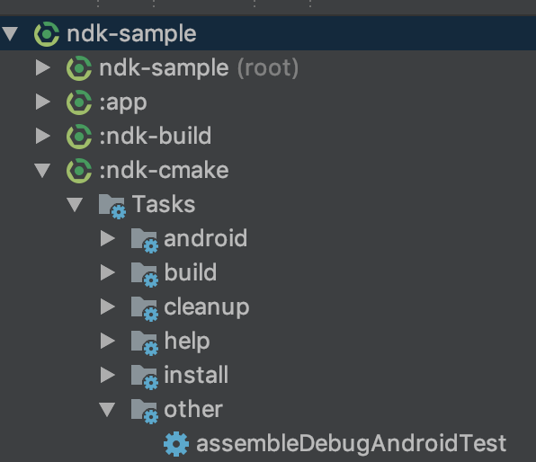
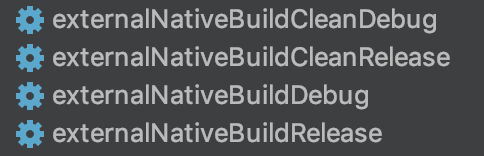
双击 exeternalNativeBuildDebug 执行任务，如图：
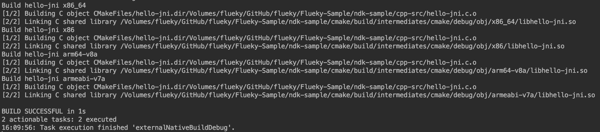
根据路径即可找到生成的so文件。
3.2 ndk-build
这是最传统的 ndk 编译方式。在配置得当的情况下，可以在不打开 AndroidStudio 情况下完成so文件的编译和输出。
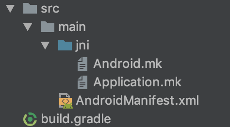
创建 ndk-build module ,添加4个文件。
- Android.mk
1
2
3
4
5
6
7
8
9
10
11
12
13
14
15
16
17
18
19
20
| # 讲真，这个参数我看不懂。从 官方demo 抄来的。用于指定源文件的时候使用
abspath_wa = $(join $(filter %:,$(subst :,: ,$1)),$(abspath $(filter-out %:,$(subst :,: ,$1))))
# 指定当前路径
LOCAL_PATH := $(call my-dir)
# 指定源文件路径
JNI_SRC_PATH := $(call abspath_wa, $(LOCAL_PATH)/../../../../cpp-src)
# 声明 clear 变量
include $(CLEAR_VARS)
# 指定 so 库的名称 libhello-jni.so
LOCAL_MODULE := hello-jni
# 指定 c 源文件
LOCAL_SRC_FILES := $(JNI_SRC_PATH)/hello-jni.c
# 添加需要依赖的NDK库
LOCAL_LDLIBS := -llog -landroid
# 指定为分享库
include $(BUILD_SHARED_LIBRARY)
|
关于 Android.mk 编译参数的设置，更多内容请阅读官方资料
- Application.mk
1
2
3
4
| # 指定编译的的so版本
APP_ABI := all
# 指定 APP 平台版本。比 android:minSdkVersion 值大时，会有警告
APP_PLATFORM := android-28
|
关于 Application.mk 编译参数的设置，更多内容请阅读官方资料
- AndroidManifext.xml
1
2
3
4
| <?xml version="1.0" encoding="UTF-8" ?>
<manifest package="com.flueky.ndk">
</manifest>
|
- build.gradle
1
2
3
4
5
6
7
8
9
10
11
12
13
| apply plugin: 'com.android.library'
android {
compileSdkVersion 28
externalNativeBuild {
ndkBuild {
path 'src/main/jni/Android.mk'
}
}
defaultConfig {
}
}
|
上面的externalNativeBuild作用同 CMake 方式的一样，用于编译生成 so 文件。
但是 ndk-build 还支持使用命令ndk-build编译 so 文件。 需要将 NDK 路径添加至环境变量。
需要在jni目录下执行该命令:
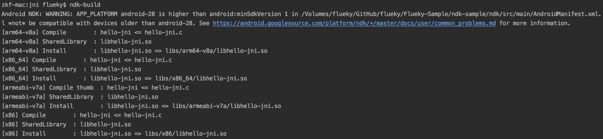
最后生成的so文件路径如图；
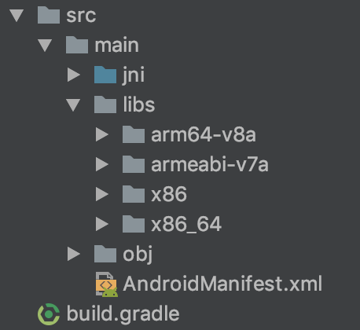
4 实践
4.1 生成头文件
在主 module 中的 MainActivity中添加 native 方法 。使用 javah 编译出头文件。 使用 -d 参数指定头文件的输出目录。
1
2
3
4
5
6
7
8
9
10
11
12
| public class MainActivity extends Activity {
static {
System.loadLibrary("hello-jni");
}
......
private native String hello();
}
|
在 app/src/main/java 目录下执行命令 javah
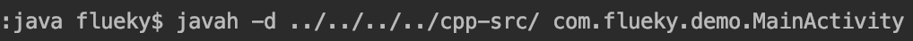
4.2 编写 C 源码
在hello-jni.c文件引用生成的头文件，并编写测试代码。
1
2
3
4
5
6
7
8
9
10
11
12
13
14
15
16
17
18
19
20
21
22
23
24
25
26
27
28
29
30
31
32
33
34
35
36
37
38
39
40
41
42
43
44
45
46
47
48
49
50
| #include <string.h>
#include <jni.h>
#include "com_flueky_demo_MainActivity.h"
#include "util/log.h"
JNIEXPORT jstring JNICALL
Java_com_flueky_demo_MainActivity_hello( JNIEnv* env,
jobject thiz )
{
#if defined(__arm__)
#if defined(__ARM_ARCH_7A__)
#if defined(__ARM_NEON__)
#if defined(__ARM_PCS_VFP)
#define ABI "armeabi-v7a/NEON (hard-float)"
#else
#define ABI "armeabi-v7a/NEON"
#endif
#else
#if defined(__ARM_PCS_VFP)
#define ABI "armeabi-v7a (hard-float)"
#else
#define ABI "armeabi-v7a"
#endif
#endif
#else
#define ABI "armeabi"
#endif
#elif defined(__i386__)
#define ABI "x86"
#elif defined(__x86_64__)
#define ABI "x86_64"
#elif defined(__mips64)
#define ABI "mips64"
#elif defined(__mips__)
#define ABI "mips"
#elif defined(__aarch64__)
#define ABI "arm64-v8a"
#else
#define ABI "unknown"
#endif
LOGD("日志输出示例");
return (*env)->NewStringUTF(env, "Hello from JNI ! Compiled with ABI " ABI ".");
}
|
4.3 运行截图
页面截图：
日志截图：
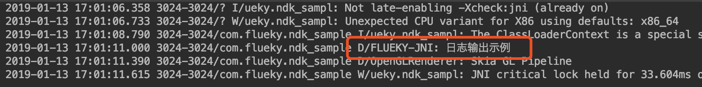
5 源码获取
工程源码已开放在GitHub，下载地址。如果您有多余的CSDN积分，不防从这里下载。可以直接编写 C 源码并进行调试和生成 so 文件。
觉得有用？那打赏一个呗。[去打赏](/donate/)